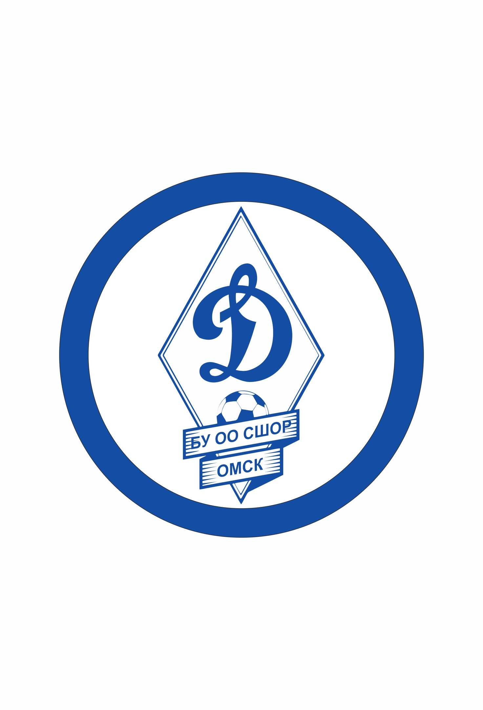
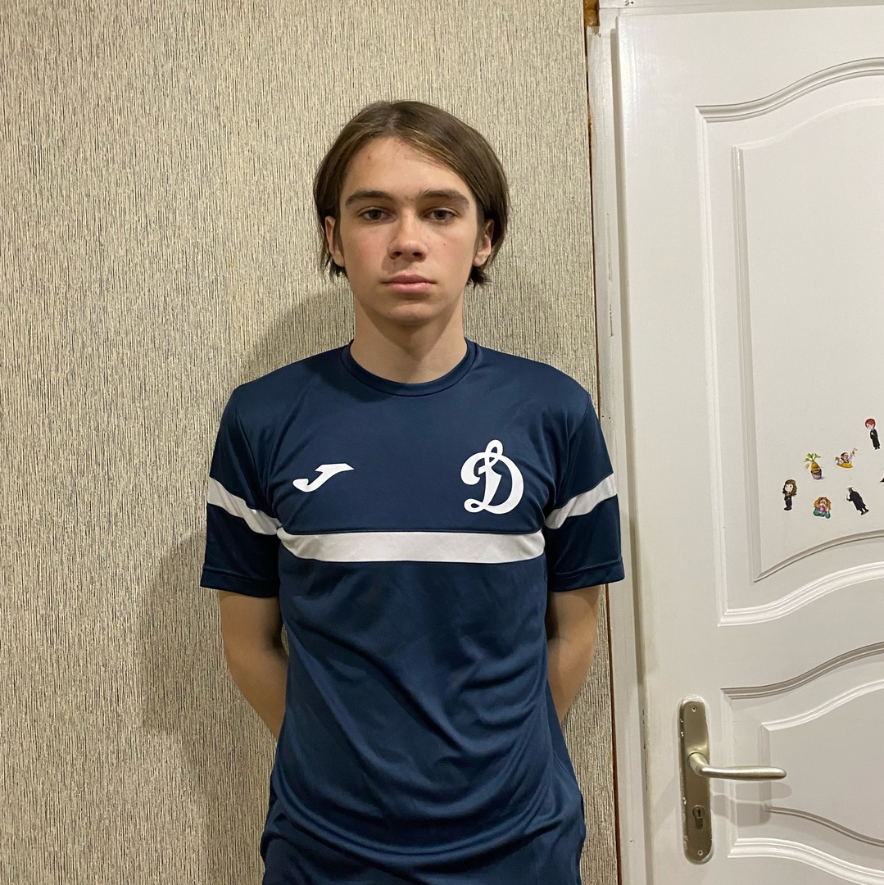

Омский спорт
Динамо

Главная
Динамо
В 1991 году распоряжением Министерства образования Российской Федерации при Омском городском отделе народного образования была открыта детско-юношеская спортивная школа №20 по футболу. Располагалась она на базе спортивного комплекса «Динамо». Обучалось в ней 400 учащихся и работало 14 тренеров-преподавателей. Директором школы был назначен Рашид Ильич Абдулин. С 1993 по 1999 директором работал Сергей Пантелеевич Малютин, с 1999 по 2003 – Евгений Михайлович Сычев, с 2003 года по 2016 – Александр Яковлевич Русаков, с 2016 и по настоящее время - Анатолий Анатольевич Шароватов. Школа быстро прогрессировала в своем развитии. За высокие результаты работы Приказом по Российской СДЮШОР Министерства образования Российской Федерации № 5-288 от 21.03.1995 г. школе был присвоен статус «Специализированная детско-юношеская школа олимпийского резерва» В 1995 году произошло значительное увеличение обучающихся.
Были открыты 13 отделений в городе Омске: «Динамо», «Дзержинец», «Шинник», «Энергия», «Искра», «Авангард», «Сибзаводовец», «Взлет», «Авиатор», «Левобережье», «Сибирь», «Маяк» «ВДВ». В том же году впервые открылись специализированные спортивные классы на базе средней общеобразовательной школы №77 с общим количеством 96 учащихся.
Футбольная школа «Динамо», развиваясь не только количественно, но и качественно, становится одной из сильнейших в регионах «Сибирь» и «Урал и Западная Сибирь». Победы динамовских команд в первенстве города и области перестали быть желаемым результатом. В отделении «Динамо» сложился коллектив, где опыт и молодость дополняют друг друга. С первых дней школы на отделении «Динамо» работали опытные специалисты - Кузенков В. В., Чикинский А. И., Осыкин Ю. Д., Сычев Е. М. На данный момент, в спортивной школе работает молодой квалифицированный коллектив. 92% тренерского состава имеют высшее образование, 38% имеют высшую и первую квалификационные категории. Сегодня под руководством 48 тренеров в школе занимаются 2473 детей и подростков, 255 из которых проживают в сельской местности. 44% воспитанников занимаются на базе образовательных учреждений. Ежегодно наши воспитанники входят в составы сборных команд межрегиональных общественных объединений. Тренеры Осыкин Ю. Д., Семерня М. И., Чикинский А. И., Гощицкий Е. В., Русаков А. Я. в разные годы руководили этими сборными на финалах Первенств России среди сборных команд Межрегиональных Общественных Объединений.
Мы гордимся своими воспитанниками. Более пятидесяти наших подопечных играли и играют в командах мастеров различного уровня.
Ежегодно проводится отбор одаренных футболистов в специализированные классы. Сегодня на базе БОУ г. Омска "СОШ № 77" открыт специализированный класс с углубленным изучением и освоением техники и тактики основ игры в футбол. Выстроенная модель класса позволяет каждому футболисту получить спортивную подготовку на уровне своих возможностей и с учетом его физического развития. Спортивная школа является организатором проведения спортивно-оздоровительных мероприятий различного уровня, 75% из которых проводятся совместно с социальными партнерами.
